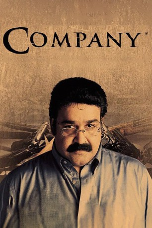

#6787 Company
 
 IMDB-Wertung: 8.0 / 10
IMDB-Wertung: 8.0 / 10  Tomatometer: 67
Tomatometer: 67  Metascore: 0
Metascore: 0 
Mallik is a henchman of Aslam Bhai, a Mumbai underworld kingpin. He inducts local hothead Chandu into the gang, and the two of them soon form a formidable faction within the gang, eventually displacing Aslam. As the empire grows, however, the two of them start drifting apart.
Jahr: 2002
Dauer: 114 Minuten
FSK:
Land: Indien Studio: EuroVideoTonspuren:
Untertitel:
Auflösung: 1080p (1920x816) Größe: 3440 MB
Genre: Action, Thriller, Drama, Krimi
Regisseur: Ram Gopal Varma
Drehbuch: Jaideep Sahni
Soundtrack:
Darsteller:
- Ajay Devgn als Mallik
- Mohanlal als Srinivasan
- Manisha Koirala als Saroja
- Seema Biswas als Ranibai
- Vivek Oberoi als Chandrakant, Chandu
- Antara Mali als Kannu
- Bharat Dabholkar als Home Minister Rahute
- Ganesh Yadav als Yadav
- Vijay Raaz als Koda Singh
- Rajpal Yadav als Joseph
- Harsh Chhaya als Insp. Sawant
- Neeraj Vora als Sanam Kumar
- Makrand Deshpande als Narrator
- Isha Koppikar als Special Appearance, Song 'Khallas!'
- Akash Khurana als Vilas Pandit
- Madan Joshi als Aslam bhai
- Ashraf Ul Haq als Krishnan
- Akshay Verma als Kenkare
- Mukesh Bhatt als Akram
- Manoj Goyal als Mental Warsi
- Sabir Masani als David
- Noormani als Pappu
- Pankaj Budhama als Ravi Pawar
- Hemant Mishra als Sharma
- Rajendra Sethi als Saeed
- Pankaj Jha als Anees
- Rajesh Tandon als Gadgil
- Mukul Nag als Insp. Navlekar
- Shanu Dey als Insp. Praful
- Ajit Bhagat als Insp. Rathore
- Gopal K. Singh als Surti's man
- Aryaman Sapru als Naved Khan
- Rushali als Film heroine
- Kirtida als Srinivasan's wife
- Dwani als Srinivasan's daughter
- Mithila als Srinivasan's daughter
Datei: X:\2002\Company (2002, FSK, 1920x816).mkv seit 30.08.2017
Festplatte: HD 1996-2002
 Es gibt insgesamt 93 Filme in der Gruppe '2002'
Es gibt insgesamt 93 Filme in der Gruppe '2002'